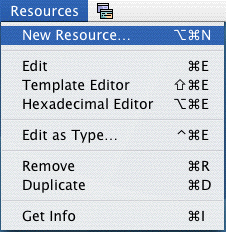

Top | Prev | Next
Description of the menu items
File menu
- New Map
-
Create a new resource file. A standard dialog lets you indicate the name and
the location of the new resource file to create; two radio buttons let you
specify whether the resource map should be stored in the data fork or the
resource fork of the file.
- Open...
-
Brings up a standard dialog to open a resource map. In this dialog, three
radio buttons let you specify the fork in which to look for resources. The
available options are:
- any fork: in that case, Rezilla will look first for a data fork
resource map. If it can't find one, it will then look in the resource fork.
- data fork: look only for a data fork resource map
- resource fork: look only for a resource fork resource map
You can also select the Read Only checkbox: if it is checked, the
map will be opened in read-only mode and all the editing commands will be
disabled.
- Recent items
-
This is a submenu keeping the names of the ten most recently opened resource
maps. Selecting an item from this menu will open the corresponding
resource map.
- Close
-
Close the topmost window.
- Revert
-
This item will restore the last version saved on disk in case the current
map has been modified.
- Save
-
Save the modifications to disk.
- Save As...
-
Brings up a standard dialog to specify a file in which to store the current
resource map. Three radio buttons let you specify in which fork to store
the map. The available options are:
- same fork: use the same fork as the currently opened map.
- data fork: save in the data fork.
- resource fork": save in the resource fork.
- Export...
-
This item lets you export the structure and contents of a resource map to
files in various formats. Currently available formats are:
In XML format, the resource data are Base64 encoded as is usual in XML to
store binary data (plist files for instance use the same encoding). In text
format, on the contrary, resource data are in hexadecimal form (each byte
represented by two hexadecimal numbers like in an hexadecimal editor).
DeRez is a format which is of interest only for developers: it is the format
used by the Rez and DeRez tools. The resources are output as data in a way
similar to what the DeRez tool produces when no specific resource pattern
is specified.
Edit menu
- Copy / Cut / Paste
-
The Copy, Cut and Paste commands can have different meanings according to
the context. See the Copy, Cut and Paste section below.
- Clear
-
Deletes the selection. This command can have different meanings according to the
context. If a Resource Map Table is active and resources are selected
therein, they will be removed from the map; if an hexadecimal editor window is
active and some text is selected in a pane, this selection is deleted.
- Select all
-
Just as it says...
- Find...
-
In the hexadecimal editor, this command brings up a dialog in which you can
enter a string to search.
Two radio buttons let you specify in which pane the search is to be done.
When searching in the right pane, a check box allows to specify a
case-insensitive search.
- Find again
-
This command searches, from the current position, the string entered in the
Find dialog. It uses the same settings as currently selected in the Find
dialog. If the Find dialog contains an empty search string, the command is
disabled.
- Compare maps...
-
This item lets you compare two resource maps. This can be useful if you
want to see what has changed between two successive versions of an
application or a file. The dialog window in which one selects the files
whose resources must be compared contains three checkboxes which let you
specify additional comparison options: it is possible to ignore differences
relative to the name, to the attributes or to the binary data of the
resources.
The results are displayed in a window containing three lists: the left
hand side list contains the resources found in the first resource map and
absent from the second, the right hand side list contains the resources
found in the second resource map and absent from the first. The middle list
contains resources existing in both Resource Maps but which differ
according to some criterion. If you click on a resource in this list, the
hexadecimal data for the resource will be displayed in two parallel panes
in the bottom part of the window for comparison: on the left, the data as
found in the first map, on the right the data as found in the second map.
The data can be viewed either as hexadecimal or as text using the two radio
buttons at the bottom of the window.
Resource menu

- New Resource
-
Create a new resource in the current resource map. A dialog window lets
you specify the type, ID, name and attributes of the new resource. A
resource is then created with empty data: the resource is created in
memory and you will have to save your file to make it permanent.
- Edit
-
Calls the Hexadecimal Editor for all the selected resources in the resource
map table. This is equivalent to double-clicking on a resource in a
resource map.
- Get Info
-
Calls the Inspector window for the first selected resource in the resource
map table. This is equivalent to option-clicking on a resource in a
resource map.
- Duplicate
-
Duplicates all the selected resources in the resource map table. This
command attributes an unique ID for the duplicated resources. You can change
these values later with the Inspector window.
- Remove
-
Removes all the selected resources from the resource map table. Note that
this action won't be definitive until you save explicitely the file.
Window menu
This menu lists the windows currently opened in Rezilla (resource
maps, editing windows etc.). Selecting an item in this menu brings the
corresponding window to the front.
Help menu
The Help menu contains a Rezilla Help item which lets you access
directly the documentation about Rezilla and read it using the System's
Help Viewer.